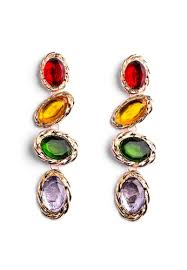
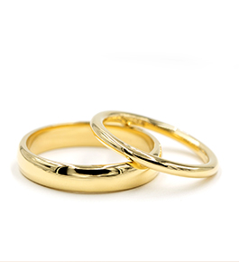

- HOME
- BLOG
- CONTACT US
FATIMA ADAM JEWELRY
Welcome to the world of unique contemprary yet so luxurious jewelry pieces.
We pays tribute to femininity through its infinitely precious luxury jewellery – jewellery made with daring, expertise and shared emotion, through emblematic pieces that inspire awe.
Pushing the boundaries of its creativity ever further, Fatima Adam calls upon the best designers, gemmologists, goldsmiths and setters to bring its fine jewellery to life, staying true to its motto to “always do better than necessary.” Thus, through the elegance of its forms, the delicacy of its light and the expressive power of its motifs, each Piaget jewellery creation becomes an ode to feminine grace.
- Gemstone Earrings
- Custom Ring
- Pendant Necklaces
- Cuff link




OUR HERITAGE
The founder of The Academy, Fatima is a British jewellery designer specialising in unique and unusual gemstones together with diamonds and precious metals.”
Having worked in the industry for over 12 years, Lucy has honed her skills throughout the world working for leading jewellers in the United States and Australia, whilst at the same time as perusing her own work.
“You can see them trying their best to be a bit different. They try to come across as being more Western. Giving themselves a French name, for instance. This mentality has to change.”

Follow This link to view more collections OUR SIGNATURE COLLECTION
HOW TO STYLE OUR JEWELRY PIECES?
It can be difficult choosing daytime jewelry for yourself - sometimes we end up waiting for a friend to treat us with a jewelry gift.It’s not just that we can’t afford it but simply because we can’t decide.
There are so many options out there with trends frequently changing so it can be a difficult decision, we get lost in bundles of designs and styles. I do think there is an element of costs too, even the high street brands add up once you have added a few different items to the basket.

MORE INTERESTING LINKS DATE NIGHT STYLES